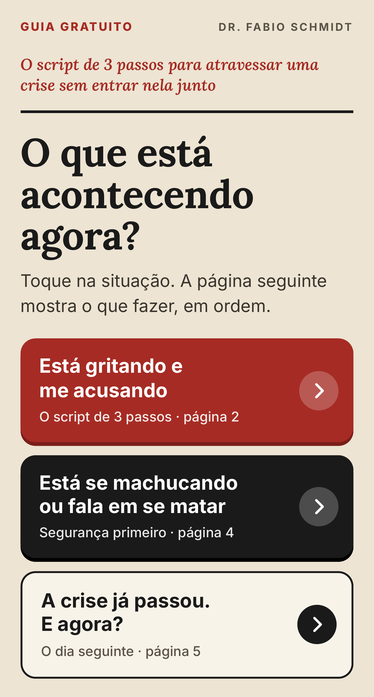

PARA QUEM CONVIVE COM BORDERLINE
Guia grátis
O script de 3 passos para atravessar uma crise sem entrar nela junto.

Responda
COMEÇAR
aqui no story que eu te mando no direct.
Guarde no celular.
Na hora da crise, abra e toque na situação.